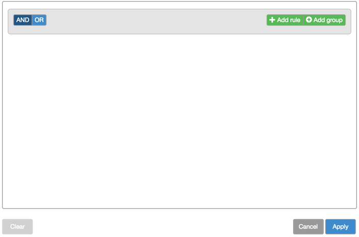
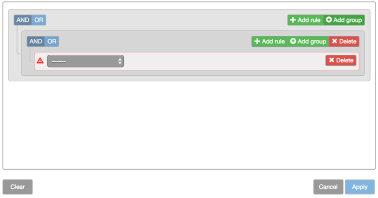
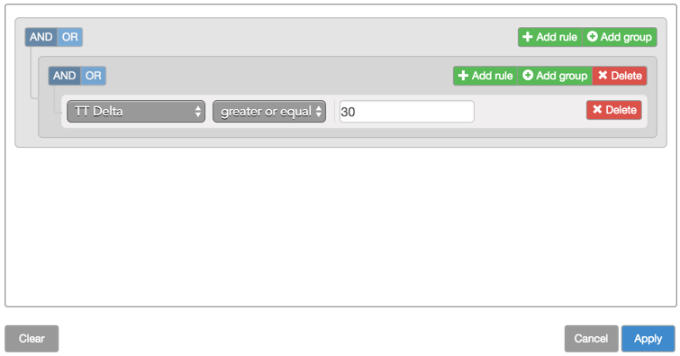
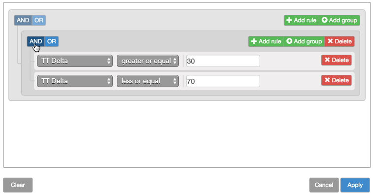
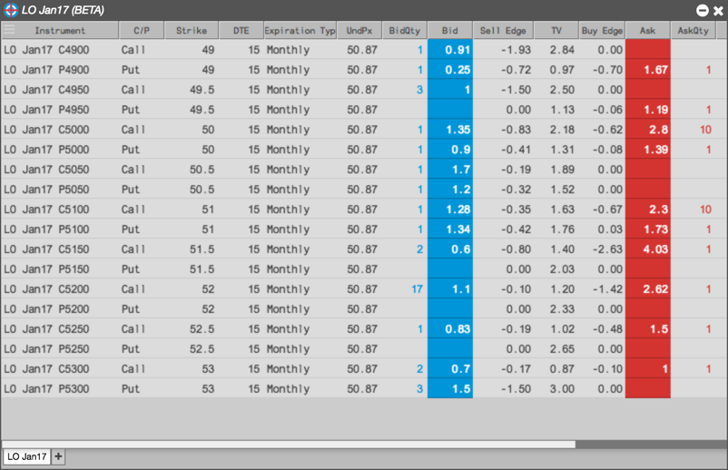

Creating a filter group
To create a filter group:
-
From the sidebar, click the
 icon to open the Filter builder.
icon to open the Filter builder.
-
Click Add group.

-
Click Add rule.
-
Select the desired field you want to use in the filter; then select the desired criteria for the field.

-
Click Add rule
-
Select the desired field you want to use in the filter; then select the desired criteria for the field.
-
In the group area, click AND or OR as desired.

-
Click Apply.
The contents of the Electronic Eye widget updates to show only those instruments that match the filter rule.
